N Stuff Music Creative Studio

Ideation / Service Design
DURATION: January - May 2022
COLLABORATORS: Yang Cheng, Atul Kushwaha
CONTEXT: 05-452: Service Design
In Spring of 2022, I took Service Design, an HCI course focused on learning how to use use service thinking and associated methods and tools to understand product service systems (PSS), identify opportunities to create value through service, design a service, test it and situate it in the PSS. The client for this course was N Stuff Music, a local music shop known throughout the U.S. for their high quality equipment and variety of service offerings. Our task over the course of the semester was to conduct ample research and generate a service proposition for N Stuff Music that emphasizes a co-creation of value between N Stuff and its target audience.
Methods
Conceptual Modeling
Product-Service System Mapping
Service Blueprinting
Semi-structured Interviews
Storyboarding
User Testing
Video Editing
Tools
Google Slides
Figma
Miro
Slack
Initial Research
Guerilla Research: We paid an on-site visit to N Stuff Music and spent two hours touring the various floors of the store and conducting intercept interviews. The co-owner led us on a tour of the main store, the Next Door Cafe, and the Little Lesson House. After the tour, we interviewed him about overall goals for his business. We then interviewed a long-term customer and another customer who picked up a repaired keyboard. We also observed an employee while he carried out the repair checkout process and interviewed him afterwards.
Informational Research: While there aren’t many sites or articles dedicated specifically evaluating the store in its entirety, N Stuff has amassed a significant amount of reviews online on Google (1,165 with 4.9 stars on average), yelp (36 with 5 stars on average), and Facebook (265 with 4.9 stars on average). Outside of their site, they upload information regarding their products + services on Facebook and YouTube. Just from these outside sources alone, it’s clear that they have employees dedicated to monitoring their presence on social media.
Experiential Digital Research: N Stuff has a very established website that allows its users to purchase or rent instruments, register for lessons, view options for repairs, as well as access information regarding events and their cafe. The lessons and the cafe have their own separate sites that connect to the main site. Users can also access contact information and message the store from within the website. While it appears that most of the services they provide are accessible through the store, N Stuff’s revenue primarily comes from their in-store operation, suggesting that the human engagement that comes with the store is a point of preference among customers.
Here are some of the relevant key insights based on the different types of preliminary research conducted:
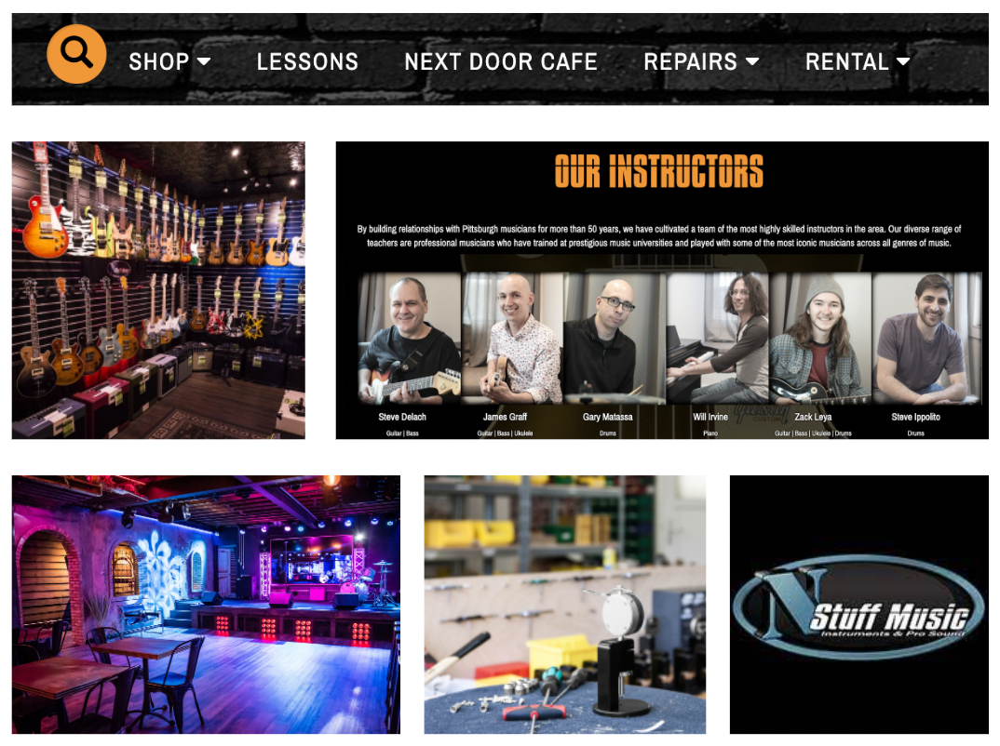
Insight #1:
Our experiential research into the website showcased the plethora of services provided for customers at every stage of the instrument lifecycle. Additionally, we met with customers there for different services, lessons, shopping, and even to just talk to the employees about their instruments -- all showing how much of a “one-stop shop” N Stuff is.
Insight #1:
N Stuff engages with customers at every stage of their instrument interaction
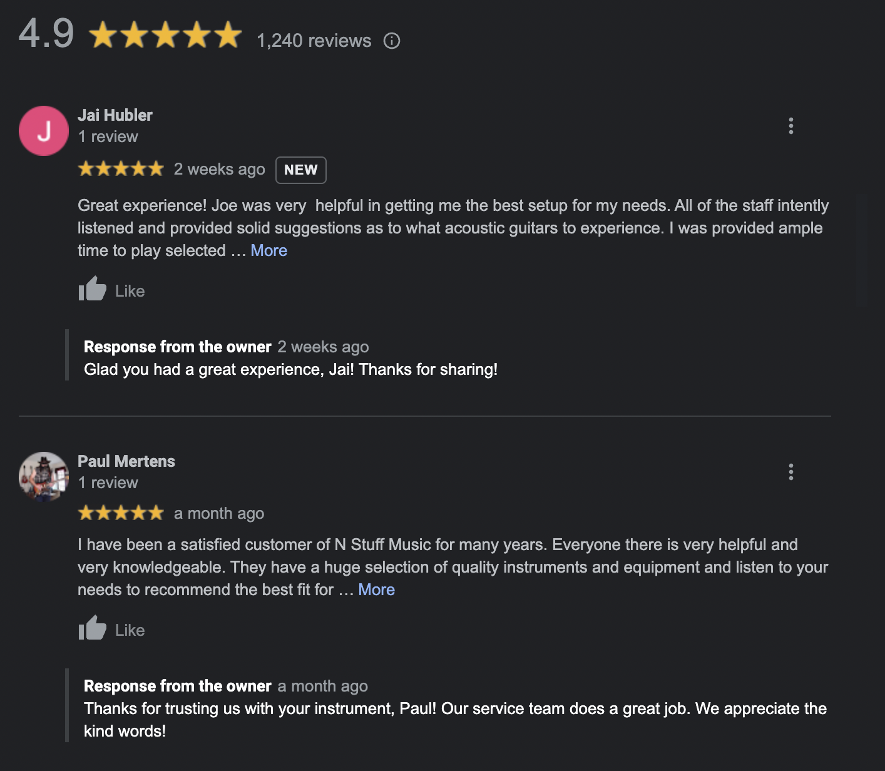
Insight #2:
Many of the online reviews for N Stuff are from long-time customers praising the consistency and quality of N Stuff’s services and employees, suggesting the storefront has a very “where everybody knows your name” culture. When we went in store we also interacted with many customers who described N Stuff as a fixture of the community.
Insight #2:
N Stuff is a pillar of the Pittsburgh community
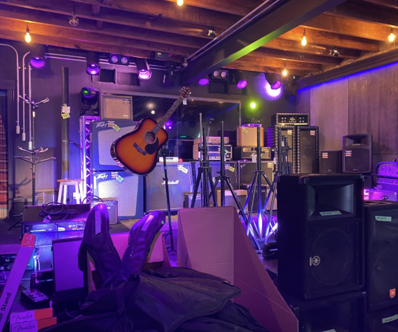
Insight #3:
We interviewed an employee who mentioned that recently an event by a female guitarist at the cafe helped inspire scores of young girls to pick up playing guitar as a hobby and also increased their footfall at the store and led to increased sales. The events also helps bring people together and unlocks potential networking opportunities for people looking for bandmates.
Insight #3:
NStuff regularly organizes events in the cafe which helps bring in new clientele and also helps to build a sense of community
Service Innovation Concept Generation
Now that we had garnered insights from our research, it was time to conceptualize different potential service innovations for N Stuff. We converted our insights into about 10 ideas overall of which the following were the strongest contenders:
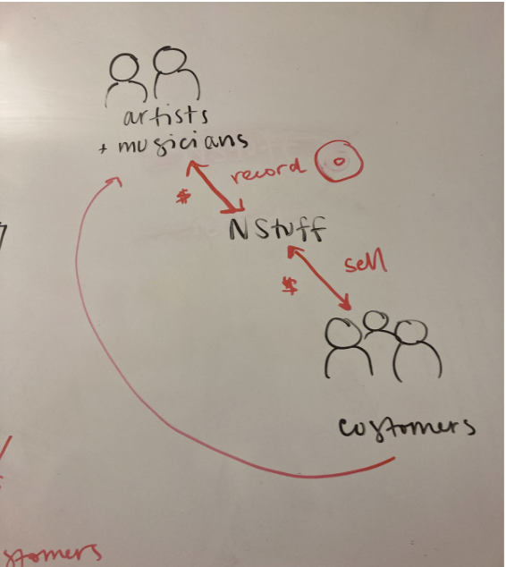
Idea #1:
N Stuff currently has an area that resembles a recording studio, just needing some more of the equipment in order to be one, so it could be a service provided to artists at a cost and the music recorded/produced could be sold at the storefront as well.
Idea #1:
NStuff provides a recording studio for musicians and sells their music upfront
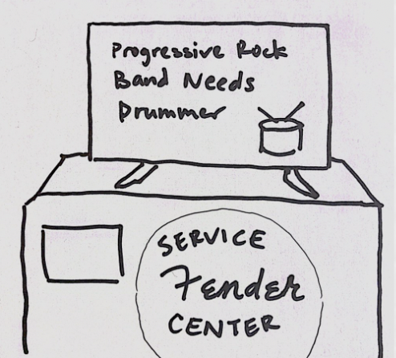
Idea #2:
Interviews with long-time musicians revealed that musicians want to play music in a band but is having trouble finding the right one. We also noticed the posters in the corner of the N Stuff store searching for band members while there is a TV perfectly positioned in the main hallway.
Idea #2:
Digital bulletin board for finding band members
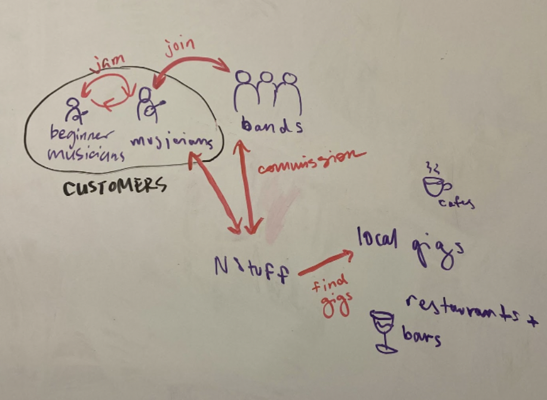
Idea #3:
N Stuff currently has a significant customer base of musicians, so if they could have a service where event organizers or local establishments looking for professional musicians could reach out to them to match with specific musicians, they could earn a commission and strengthen their relationship with their aspiring musician customers.
Idea #3:
N Stuff connects event organizers/local gigs and musicians
Service Blueprint: Before
We ultimately ended up going with Idea #1 due to its clear value for both musicians and N Stuff. Additionally this idea utilizes existing services and equipment available at the storefront and keeps the instruments specifically on site, limiting the risks associated with a rental. This idea also just felt like the last step in the services already provided by N Stuff given that they already handle every other aspect of an aspiring musician's lifecycle. Below is the service blueprint for what a musician looking for a recording service currently looks like.
For an amateur musician looking to record on their own, the primary touchpoints are the internet and/or stores for the purposes of learning how to record as well as purchasing the correct equipment necessary to do so. The primary support process for this is simply the payment platform used to purchase the equipment.
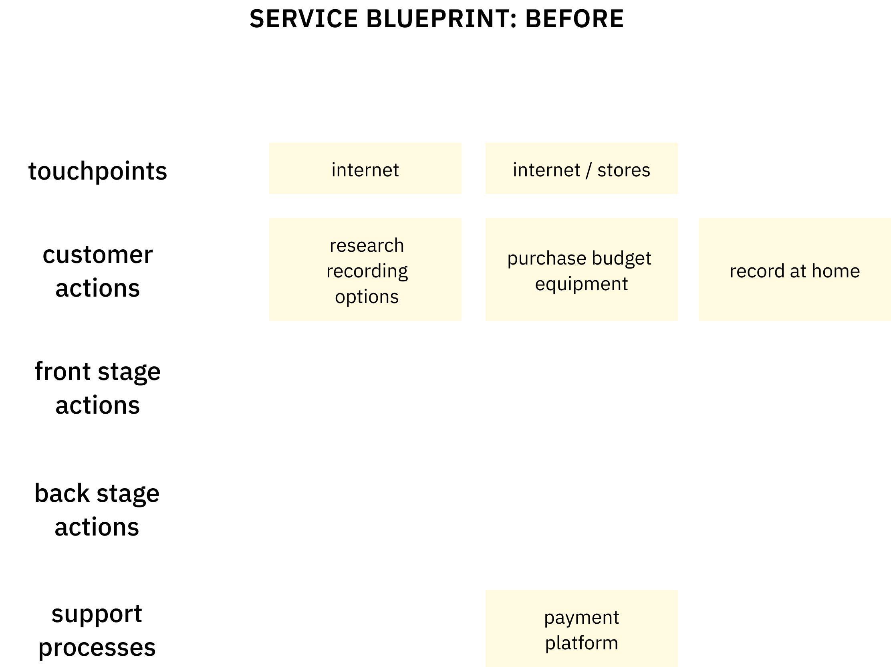Initial Pitch + Feedback from the Client
In our initial pitch of our idea to N Stuff, we used a persona of an aspiring musician named Andy to illustrate the value of our concept for potential customers. We focused on explaining how this service builds off of N Stuff's current values of remaining customer-centric, comprehensive, and resourceful. We centered our pitch around the insight that budding musicians often don’t know where to start when it comes to recording.
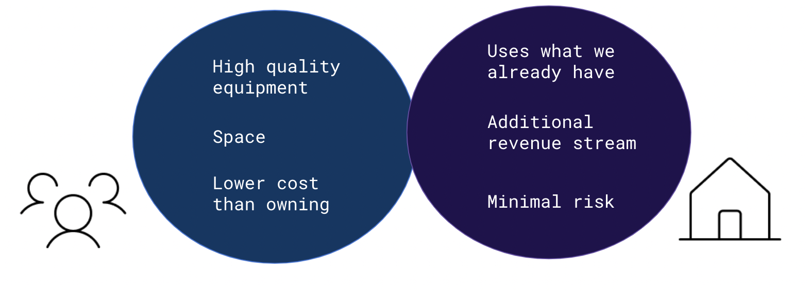There are many potential variations or additions to this idea that we also proposed. Musicians that like to record regularly could benefit from a subscription model in terms of how they book time in the studio. They could pay a monthly fee and have a specified recurring time slot or a specific number of hours per month they can spend recording. This would also make first-timers feel less pressure to perfect their recording on the first try. Another add-on could be the utilization of instruments. N Stuff currently does rentals for customers, so combining this with the recording time could allow musicians to rent higher quality instruments for their recordings and those rented instruments would never have to leave the store, minimizing the risk of damage for N Stuff. Finally, in addition to the recording fee, N Stuff could profit over marketing / distribution as well. Musicians who record at N Stuff could have their music advertised at N Stuff for an additional fee, or if they have physical albums could have them distributed at N Stuff for a fee. N Stuff would be able to earn commissions while still helping customers promote their music.
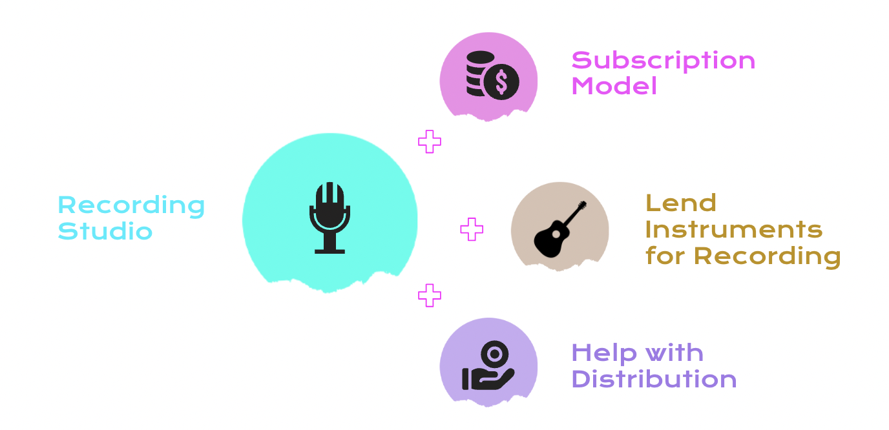Justin, the current owner of N Stuff, listened to our pitch and emphasized, that while our idea was great in theory, there was a fundamental issue concerning a lack of human resources available at N Stuff to help potential customers record and provide them feedback on their music. He suggested we consider researching music production apprentices and incorporating them into our idea in order to address the human resource constraint.
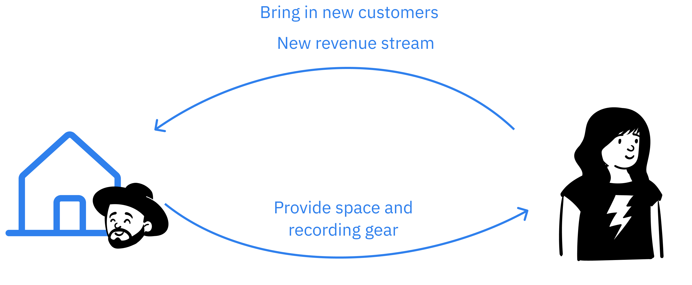Storyboarding
After the presentation, we realized we needed to address the staffing issue as the first step to realizing our vision. Looking back, there were gaps in our understanding of all the people involved in the recording process and the skills necessary to produce music. While we had intended the studio to be for purely recording, the feedback from the client suggests that there is some sound engineering and editing that needs to be included in order for the studio to be worthwhile to musicians wanting to record. In order to test our initial idea further, explore the idea of an apprentice, as well as try to iterate on our idea based on the feedback provided by N Stuff, we created storyboards and interviewed aspiring musicians as well as more N Stuff employees.
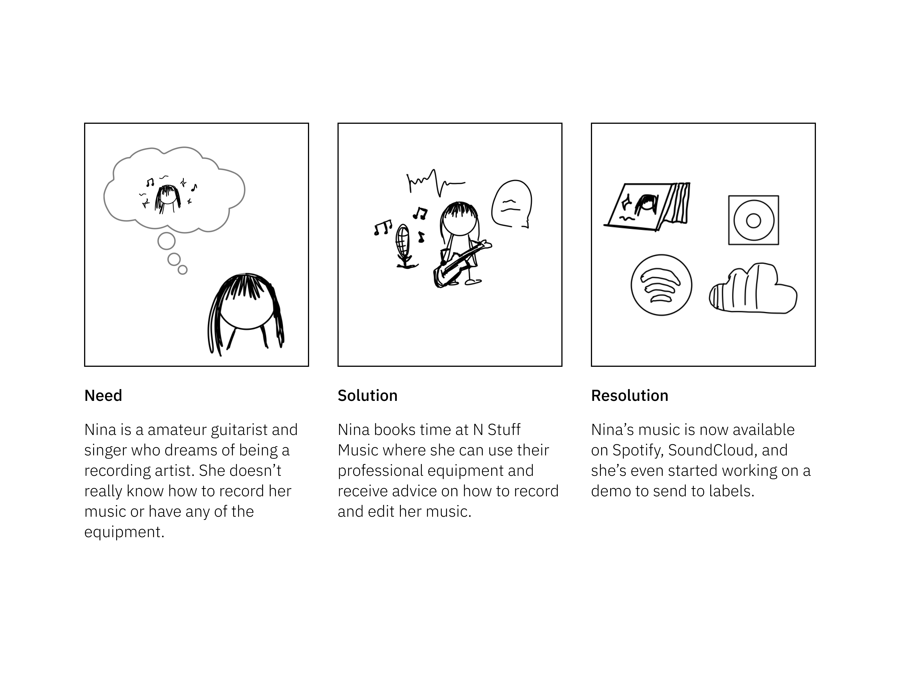
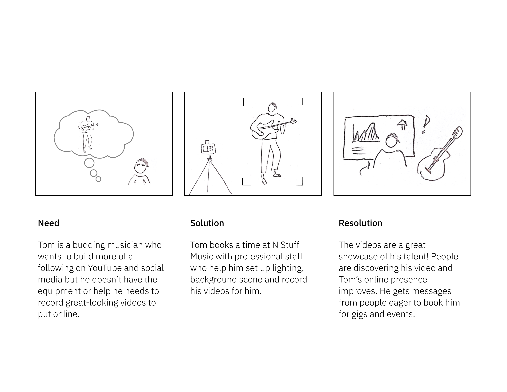
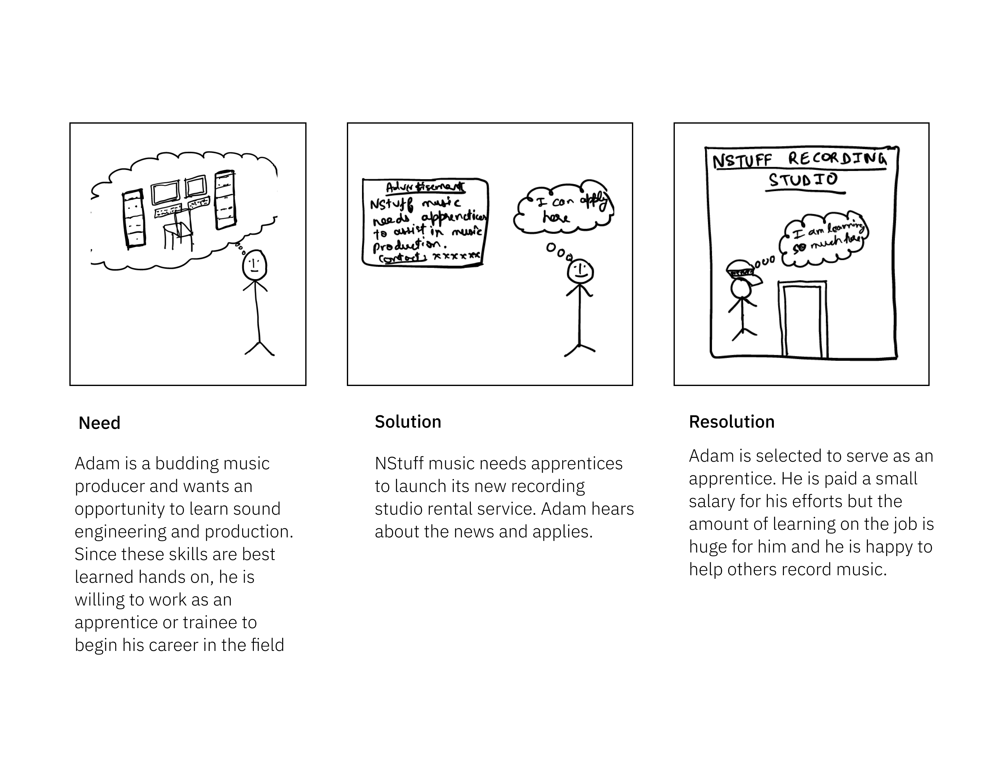
Key Insights from the Musician Interviews:
Amateur musicians are interested in learning more about recording + sound engineering
Hobbyist musicians are less likely to spend as much on recording than aspiring musicians
Currently recording is not that difficult, but editing and actually producing music can be more difficult, requiring time and technology
Key Insights from the N Stuff Staff Interviews:
The NStuff store sees great demand for rentals for sound and lighting equipments
Many bands have been utilizing the next door cafe to livestream their music performances
Next door cafe offers good quality recording but not professional quality recording
- 2 Apprentices or freelancers could solve the human resource problems